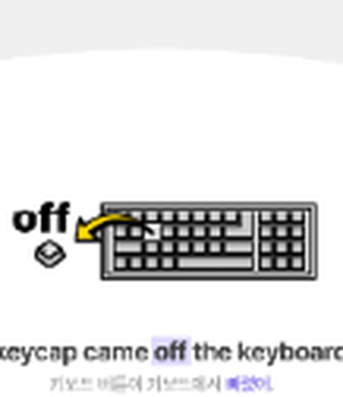
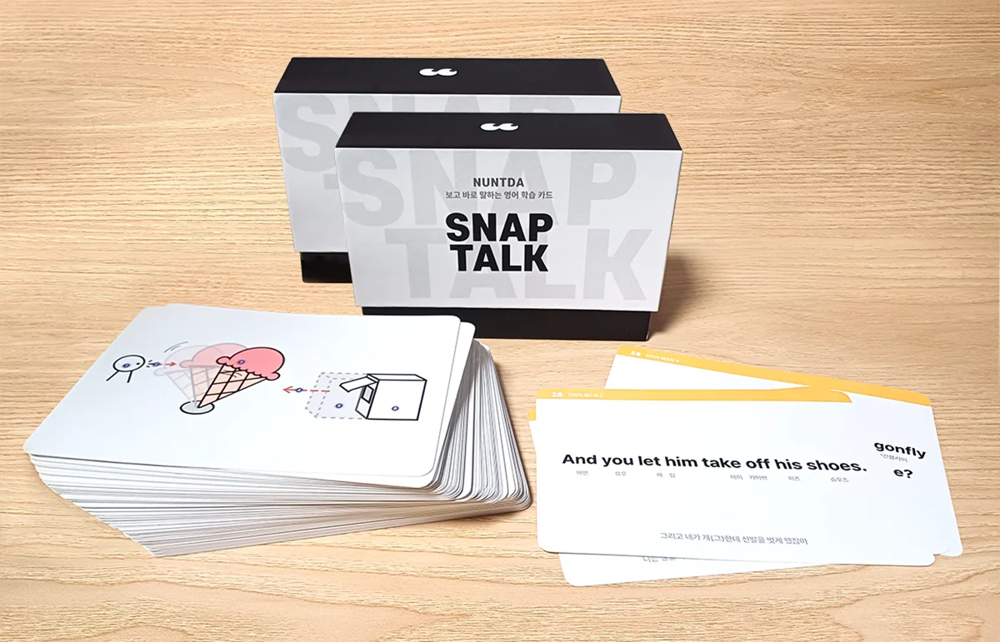

이미지 쉐도잉
STEP 1~4 단계별 학습
NUNTDA · 성인 영어회화 전문 교육
영어를 오래 공부했지만 말하기가 어려운 성인 초보자를 위해. 그림으로 이해하고, 강의로 배우고, 직접 말하는 이미지 쉐도잉.
무료로 학습법 체험하기수강 과정 보기
WHY NUNTDA
한국어 문장을 먼저 만들고 영어로 번역하는 대신, 그림 속 상황과 영어 표현을 직접 연결하는 연습을 합니다.
머리로 배운 영어를 온몸으로 익히는 훈련.
FREE EXPERIENCE
회원가입 없이 실제 강의 그림으로 체험하세요.

LEARNING CONTENTS

I showed the video to my mom.
I showed the video to my mom to make her smile.
기본 문장에서 목적을 더해 말하는 연습.
PREPOSITIONS & VERBS


키캡 하나가 키보드에서 떨어져 나왔어요.
STEP 1~4 단계별 학습
이미지로 핵심 개념 이해
이야기 속에서 표현 다시 만나기

READ & LISTEN
초보자를 위한 The Trouble Twins 영어 원서 12권. 그림과 이야기를 따라 읽고 듣는 연습을 이어가세요.

SNAP TALK
실물 학습 카드로 강의에서 배운 표현을 반복하고, 그림을 보고 직접 말해보세요.

OUR TEACHER
눈트다는 영어 문장을 그림과 연결해 이해하고, 직접 말하는 훈련을 중심으로 강의와 교재를 구성합니다.
실제 강의 만나보기
REAL LESSONS
NUNTDA NEXT
그림 복습, 어순 배열, 직접 말하기를 이어가는 연계 학습 앱.
1주 그림 연결 · 2주 어순 연습 · 3주 말하기 · 4주 복습과 비교
수강 고객 60일 이용 혜택은 검토 중입니다.
상품 구성 및 가격 검토안 · 결제 미연결
처음 시작하는 분
1년 · STEP 1~2 · PDF
체계적으로 배우고 싶은 분
1년 · STEP 1~4 · 전치사·동사 · 생활영어 · 교재
원서까지 확장하고 싶은 분
3년 · 종합 과정 · 원서 및 추가 콘텐츠
짧은 문장과 그림부터 시작합니다. 무료 체험으로 난이도를 확인하세요.
강의는 이해와 확장, 앱은 반복 말하기 훈련을 돕습니다.